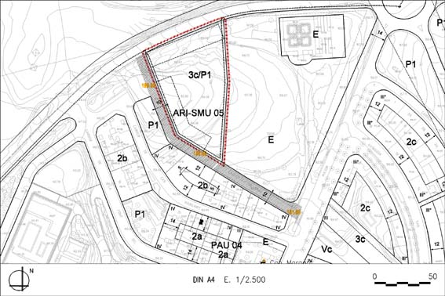

ARI 05 “Cementiri” (Sector de Millota Urbana ARI-SMU 05)

Objectiu: Transformació d’un espai no edificat per tal de millorar la qualitat urbanística de l’espai i poder ofertar habitatges de protecció pública, contribuint a donar caràcter urbà a un espai perifèric.
| Superfície del polígon: Ordenació Sistemes urbanístics de cessió: Espais lliures (P1) Zones edificables: (Galibs indicatius) Volumetria específica (clau 3c) |
5.960 m2s 3.935 m2s 2.025 m2s |
C.E.B.: (St) Sostre total (B+2) (SH) Sostre per habitatges Nombre màxim d’habitatges: Règim HRL : (30% SH) Règim HPC: (20% SH) 1.012 m²st Règim HPO : (30% SH) 1.509 m²st Règim HP lloguer : (20% SH) 1.012m²st |
1,019 m2st/m2s 6.075 m2st 5.062 m2st 64 hab. 14 hab. 11 hab. 20 hab. 19 hab. |